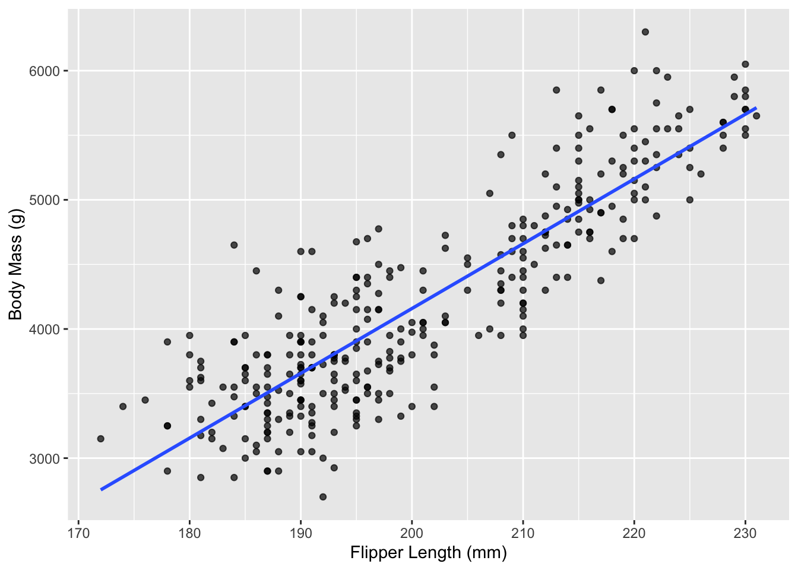
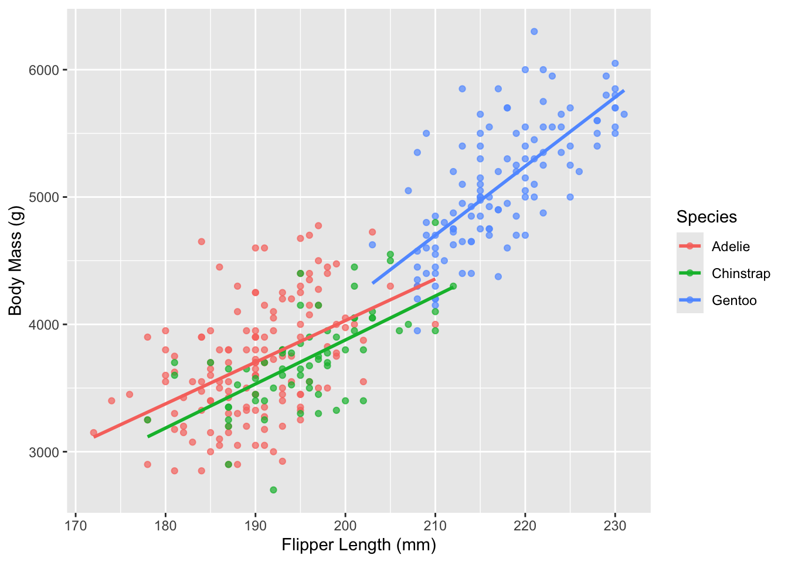
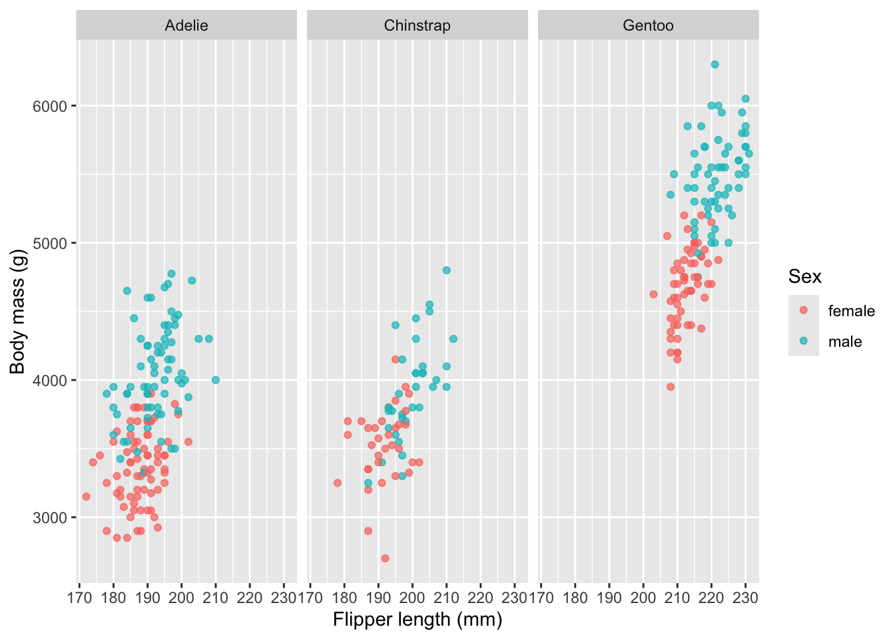
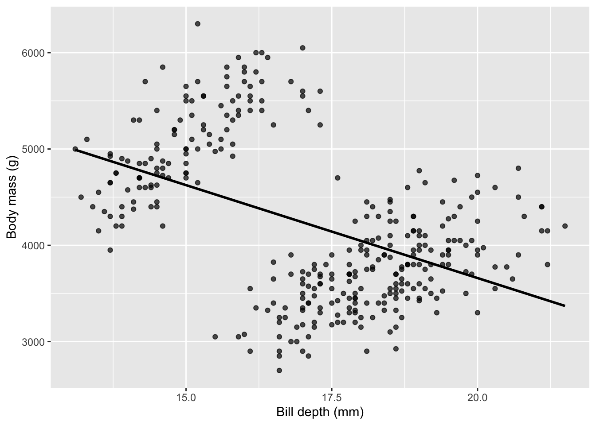
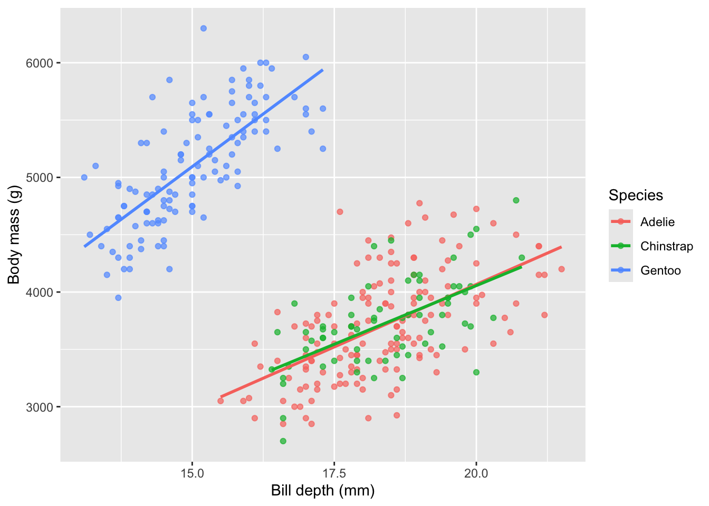

library(tidyverse)
library(tidymodels)
library(palmerpenguins)Problem Session 6
Predictive Modeling with tidymodels
Packages
The data
We’ll work with the penguins data from the palmerpenguins package: 344 penguins measured across three species on three islands in the Palmer Archipelago.
Our goal today is prediction. We want to predict a penguin’s body_mass_g from its other measurements, and we want to be able to say — with a straight face — why we chose the model we chose.
There are a handful of missing values. Dropping them is a non-learned transformation (it doesn’t depend on estimating anything from the data), so we do it before we hand anything to tidymodels.
summary(penguins) species island bill_length_mm bill_depth_mm
Adelie :152 Biscoe :168 Min. :32.10 Min. :13.10
Chinstrap: 68 Dream :124 1st Qu.:39.23 1st Qu.:15.60
Gentoo :124 Torgersen: 52 Median :44.45 Median :17.30
Mean :43.92 Mean :17.15
3rd Qu.:48.50 3rd Qu.:18.70
Max. :59.60 Max. :21.50
NA's :2 NA's :2
flipper_length_mm body_mass_g sex year
Min. :172.0 Min. :2700 female:165 Min. :2007
1st Qu.:190.0 1st Qu.:3550 male :168 1st Qu.:2007
Median :197.0 Median :4050 NA's : 11 Median :2008
Mean :200.9 Mean :4202 Mean :2008
3rd Qu.:213.0 3rd Qu.:4750 3rd Qu.:2009
Max. :231.0 Max. :6300 Max. :2009
NA's :2 NA's :2 pen <- penguins |>
drop_na()
summary(pen) species island bill_length_mm bill_depth_mm
Adelie :146 Biscoe :163 Min. :32.10 Min. :13.10
Chinstrap: 68 Dream :123 1st Qu.:39.50 1st Qu.:15.60
Gentoo :119 Torgersen: 47 Median :44.50 Median :17.30
Mean :43.99 Mean :17.16
3rd Qu.:48.60 3rd Qu.:18.70
Max. :59.60 Max. :21.50
flipper_length_mm body_mass_g sex year
Min. :172 Min. :2700 female:165 Min. :2007
1st Qu.:190 1st Qu.:3550 male :168 1st Qu.:2007
Median :197 Median :4050 Median :2008
Mean :201 Mean :4207 Mean :2008
3rd Qu.:213 3rd Qu.:4775 3rd Qu.:2009
Max. :231 Max. :6300 Max. :2009 Discussion. Why does it matter that dropping NAs happens outside the tidymodels machinery, while something like centering and scaling should happen inside it (via a recipe)?
Plot first, model second
Before we fit anything, let’s look.
glimpse(penguins)Rows: 344
Columns: 8
$ species <fct> Adelie, Adelie, Adelie, Adelie, Adelie, Adelie, Adel…
$ island <fct> Torgersen, Torgersen, Torgersen, Torgersen, Torgerse…
$ bill_length_mm <dbl> 39.1, 39.5, 40.3, NA, 36.7, 39.3, 38.9, 39.2, 34.1, …
$ bill_depth_mm <dbl> 18.7, 17.4, 18.0, NA, 19.3, 20.6, 17.8, 19.6, 18.1, …
$ flipper_length_mm <int> 181, 186, 195, NA, 193, 190, 181, 195, 193, 190, 186…
$ body_mass_g <int> 3750, 3800, 3250, NA, 3450, 3650, 3625, 4675, 3475, …
$ sex <fct> male, female, female, NA, female, male, female, male…
$ year <int> 2007, 2007, 2007, 2007, 2007, 2007, 2007, 2007, 2007…Our first candidate predictor is flipper_length_mm.
Fill in the code below to plot body_mass_g against flipper_length_mm, then add a second version colored by species with a linear smooth for each.
# plot 1: mass vs flipper
ggplot(pen, aes(x = flipper_length_mm, y = body_mass_g)) +
geom_point(alpha= 0.7) +
geom_smooth(method= "lm", se = F) +
labs(x = "Flipper Length (mm)", y = "Body Mass (g)")`geom_smooth()` using formula = 'y ~ x'
# plot 2: same thing, colored by species
ggplot(pen, aes(x = flipper_length_mm, y = body_mass_g, color = species)) +
geom_point(alpha= 0.7) +
geom_smooth(method= "lm", se = F) +
labs(x = "Flipper Length (mm)", y = "Body Mass (g)", color = "Species")`geom_smooth()` using formula = 'y ~ x'
Discussion. In the second plot, the three fitted lines are roughly parallel but sit at different heights. Translate that sentence into a model. What would the picture have to look like for an interaction between flipper_length_mm and species to be worth fitting?
Now let’s add sex to the picture.
ggplot(pen, aes(x = flipper_length_mm, y = body_mass_g, color = sex)) +
geom_point(alpha = 0.7) +
facet_wrap(~ species) +
labs(x = "Flipper length (mm)", y = "Body mass (g)", color = "Sex")
Discussion. Does sex look like it belongs in the model? As what — an intercept shift, or something more?
An aside that should make you think
Let’s look at a different predictor: bill_depth_mm.
ggplot(pen, aes(x = bill_depth_mm, y = body_mass_g)) +
geom_point(alpha = 0.7) +
geom_smooth(method = "lm", se = FALSE, color = "black") +
labs(x = "Bill depth (mm)", y = "Body mass (g)")`geom_smooth()` using formula = 'y ~ x'
ggplot(pen, aes(x = bill_depth_mm, y = body_mass_g, color = species)) +
geom_point(alpha = 0.7) +
geom_smooth(method = "lm", se = FALSE) +
labs(x = "Bill depth (mm)", y = "Body mass (g)", color = "Species")`geom_smooth()` using formula = 'y ~ x'
Discussion. The overall trend and the within-species trends point in opposite directions. What’s going on, and what does it tell you about fitting body_mass_g ~ bill_depth_mm and calling it a day?
Train/test split
We’ll hold out 20% of the data to test on, and use the other 80% to train.
We can do this by hand with sample_n(). But rsample::initial_split() does the same job, plus one extra thing:
set.seed(558)
pen_split <- initial_split(pen, prop = 0.8, strata = species)
pen_train <- training(pen_split)
pen_test <- testing(pen_split)
# check the species breakdown in each
bind_rows(
pen_train |> count(species) |> mutate(set = "train"),
pen_test |> count(species) |> mutate(set = "test")
) |>
pivot_wider(names_from = set, values_from = n)# A tibble: 3 × 3
species train test
<fct> <int> <int>
1 Adelie 116 30
2 Chinstrap 54 14
3 Gentoo 95 24Fill in the check below.
Discussion. What does strata = species do, and why would you want it here rather than a plain random sample?
Four candidate models
Our plots suggested four models worth putting head-to-head. We’ll express the preprocessing for each as a “recipe”.
rec_slr <- recipe(body_mass_g ~ flipper_length_mm, data = pen_train)
rec_add <- recipe(body_mass_g ~ flipper_length_mm + species + sex,
data = pen_train) |>
step_dummy(species, sex)Before writing the interaction recipe, let’s find out what the dummy columns are actually named. prep() estimates whatever the recipe needs from the training data; bake() applies it.
rec_add |>
prep(training = pen_train) |>
bake(pen_train) |>
names()[1] "flipper_length_mm" "body_mass_g" "species_Chinstrap"
[4] "species_Gentoo" "sex_male" Given those names, write the interaction recipe.
rec_int <- recipe(body_mass_g ~ flipper_length_mm +species+sex, data = pen_train) |>
step_dummy(species, sex) |>
step_interact(terms = ~flipper_length_mm:starts_with("species_"))Finally, a curvature model. Mass grows with flipper length, but there’s no law saying it grows linearly — let’s give it the option.
rec_quad <- recipe(body_mass_g ~ flipper_length_mm +species+sex, data = pen_train) |>
step_dummy(species, sex) |>
step_poly(flipper_length_mm, degree= 2)Now the model spec and the four workflows. All four use the same parsnip spec — that’s the point of separating the recipe from the model.
lm_spec <- linear_reg() |>
set_engine("lm")
wfl_slr <- workflow() |> add_recipe(rec_slr) |> add_model(lm_spec)
wfl_add <- workflow() |> add_recipe(rec_add) |> add_model(lm_spec)
wfl_int <- workflow() |> add_recipe(rec_int) |> add_model(lm_spec)
wfl_quad <- workflow() |> add_recipe(rec_quad) |> add_model(lm_spec)Cross-validation on the training set
Ten folds, on the training set only.
set.seed(558)
pen_folds <- vfold_cv(pen_train, v = 10)Fit each workflow to the resamples and collect the metrics into one comparison table.
# fit_resamples() each workflow, then bind_rows() the collect_metrics() output
my_metrics<- metric_set(rmse, mae, rsq)
cv_slr <- wfl_slr |> fit_resamples(pen_folds, metrics = my_metrics)
cv_add <- wfl_add |> fit_resamples(pen_folds, metrics = my_metrics)
cv_int <- wfl_int |> fit_resamples(pen_folds, metrics = my_metrics)
cv_quad <- wfl_quad |> fit_resamples(pen_folds, metrics = my_metrics)
cv_results <- bind_rows(
cv_slr |> collect_metrics() |> mutate(model = "SLR"),
cv_add |> collect_metrics()|> mutate(model = "Additive"),
cv_int |> collect_metrics()|> mutate(model = "Interaction"),
cv_quad |>collect_metrics() |> mutate(model = "Quadratic")
) |>
select(model, .metric, mean, n, std_err)
cv_results |>
filter(.metric== "rmse") |>
arrange(mean)# A tibble: 4 × 5
model .metric mean n std_err
<chr> <chr> <dbl> <int> <dbl>
1 Quadratic rmse 294. 10 10.2
2 Interaction rmse 296. 10 9.54
3 Additive rmse 297. 10 10.5
4 SLR rmse 399. 10 13.9 Discussion 1. Why did we run CV on the training set instead of on all of pen?
Discussion 2. The interaction model is strictly more flexible than the additive model — it contains the additive model as a special case (set the interaction coefficients to zero). So it can never fit the training data worse. Why doesn’t it automatically win here?
Discussion 3. Look at the std_err column, not just mean. Does the gap between the top few models look big compared to their standard errors? What should you do when two models are within a standard error of each other?
One look at the test set
Commit to a model, then use last_fit() on the original split object.
wfl_add |>
last_fit(pen_split, metrics = my_metrics) |>
collect_metrics()# A tibble: 3 × 4
.metric .estimator .estimate .config
<chr> <chr> <dbl> <chr>
1 rmse standard 296. pre0_mod0_post0
2 mae standard 245. pre0_mod0_post0
3 rsq standard 0.851 pre0_mod0_post0Now pull out the coefficients.
wfl_add |>
fit(pen_train) |>
tidy()# A tibble: 5 × 5
term estimate std.error statistic p.value
<chr> <dbl> <dbl> <dbl> <dbl>
1 (Intercept) -213. 592. -0.359 7.20e- 1
2 flipper_length_mm 19.1 3.16 6.04 5.19e- 9
3 species_Chinstrap -93.4 52.0 -1.79 7.38e- 2
4 species_Gentoo 871. 95.3 9.14 1.90e-17
5 sex_male 560. 43.0 13.0 3.68e-30Discussion. Interpret the species_Gentoo coefficient. What is it a comparison to, and where in the output is that baseline?
Discussion. Compare the test RMSE to the CV RMSE for this model. Suppose the test RMSE had come out noticeably worse than the CV estimate. Would you be allowed to go back and try the interaction model on the test set?